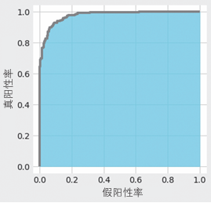
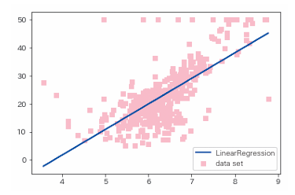
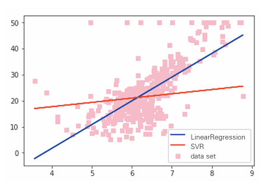
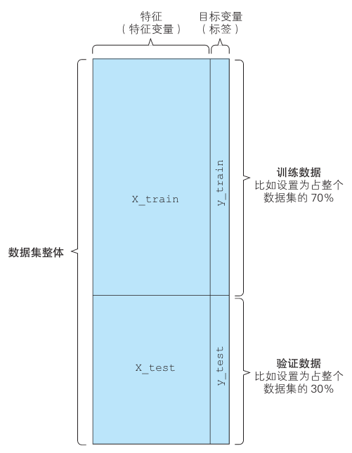
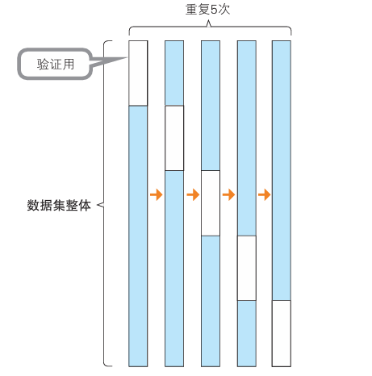
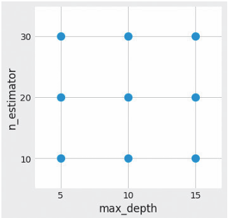

评估方法和各种数据的处理#
有监督学习的评估#
现梳理有监督学习的常见的评估方法、提高机器学习性能的方法，以及提高性能时的障碍。
分类问题的评估#
混淆矩阵#
混淆矩阵可以将分类结果以表格的形式汇总，这样就可以检查哪些标签分类正确，哪些标签分类错误。
混淆矩阵是一个评估工具，而并不是一个评估指标，通过使用混淆矩阵，我们可以再通过指标进行评估。
构成#
混淆矩阵是一个二维矩阵，用于展示模型预测结果与真实标签之间的对比。对于二分类问题，矩阵的结构通常如下：
预测为正类 |
预测为负类 |
|
|---|---|---|
实际为正类 |
True Positives (TP) |
False Negatives (FN) |
实际为负类 |
False Positives (FP) |
True Negatives (TN) |
True Positives (TP): 被正确分类为正类的样本数。
True Negatives (TN): 被正确分类为负类的样本数。
False Positives (FP): 被错误分类为正类的负类样本数。
False Negatives (FN): 被错误分类为负类的正类样本数。
实例说明#
通过代码，我们得到一个数据来进行更为具体的说明
from sklearn.metrics import confusion_matrix
cm = confusion_matrix(y, y_pred)
print(cm)
"""
[[341 16]
[ 36 176]]
"""
通过上例子，TN有341条，TP有176条，FN有36条，FP有16条。
由于使用的数据是肿瘤预测，因此进行更具体的例子解释：
有36个恶性肿瘤患者被漏诊
有16个良性肿瘤患者被误诊
有341个恶性肿瘤正确诊断
有176个良性肿瘤正确诊断
四个指标公式#
正确率 (Accuracy)： \(\text{Accuracy} = \frac{TP + TN}{TP + TN + FP + FN}\)
精确率 (Precision)： \(\text{Precision} = \frac{TP}{TP + FP}\)
召回率 (Recall)： \(\text{Recall} = \frac{TP}{TP + FN}\)
F值 (F1 Score)： \(\text{F1 Score} = 2 \times \frac{\text{Precision} \times \text{Recall}}{\text{Precision} + \text{Recall}}\)
对于以上的四个指标，以下分别说明并解释使用环境。
正确率#
正确率表示所有预测中正确预测的比例。使用accuracy_score函数：
from sklearn.metrics import accuracy_score
accuracy_score(y, y_pred)
# 0.908611599297012
精确率#
精确率表示被预测为正类的样本中，实际为正类的比例。
具体来说，精确率指的是在所有被预测为阳性的数据中，被正确预测为阳性的数据所占的比例。使用precision_score函数：
from sklearn.metrics import precision_score
precision_score(y, y_pred)
# 0.9166666666666666
精确率低，意味着预测为恶性的病例之中包含了其实是良性的病例。在这种情况下，可以通过再次检查等方式解决精确率低的问题
召回率#
召回率表示实际为正类的样本中，被正确预测为正类的比例。
也就是召回率指的是在实际为阳性的数据中，被正确预测为阳性的数据所占的比例。使用recall_score函数：
from sklearn.metrics import recall_score
recall_score(y, y_pred)
# 0.8301886792452831
在这个问题中，它表示实际为恶性中被正确预测所占的比例。
召回率低，意味着实际为恶性的病例大部分被预测为良性。与精确率低的情况相比，召回率低的问题更严重。
在使用这样的模型解决实际问题之前，需要想办法提高召回率。
F值#
F1 分数是精确率和召回率的调和平均数，用来综合考虑两者的表现。f1_score函数用于计算F值：
from sklearn.metrics import f1_score
f1_score(y, y_pred)
# 0.8712871287128713
精确率和召回率之间是此消彼长的关系，如果试图让其中一个的值更高，则会导致另一个的值更低。如果这两个指标同等重要，可以观察F值。
预测概率#
在进行二元分类时，预测结果必须为0或者1这两个值中的一个。但实际情况下，大多数模型得到的都是两个预测结果的分别概率。
同时 predict 函数将概率阈值设置成50%。
如果要查看的是分别概率，可以使用predict_proba函数方法：
model_lor.predict_proba(X)
"""
array([[4.41813058e-03, 9.95581869e-01],
[4.87318118e-04, 9.99512682e-01],
[3.31064277e-04, 9.99668936e-01],
...,
[2.62819353e-02, 9.73718065e-01],
[5.09374706e-06, 9.99994906e-01],
[9.74068776e-01, 2.59312242e-02]]
"""
根据概率，我们可以自行调整阈值，例如我们宁愿错诊，不愿漏诊，我们可以这个阈值降低为第二项的概率超过10%
import numpy as np
y_pred2 = (model_lor.predict_proba(X)[:, 1]>0.1).astype(np.int)
print(confusion_matrix(y, y_pred2))
"""
[[259 98]
[ 2 210]]
"""
此时的混淆矩阵就明显减少了漏诊的情况。
正确率下降到0.82左右，但是召回率非常高，达到了0.99左右。
ROC曲线与AUC#
对于数据数据有偏差的时候，例如阳性的数据有95个，阴性的数据只有5个，此时的预测正确率等就会出现一些偏差，让像傻子一样只说阳性的模型也能有很高正确率。
应对数据不均衡问题的指标有AUC （Area Under the Curve，曲线下面积）。
ROC曲线#
这里的ROC曲线的是横轴为假阳性率（即FP的占比），纵轴为真阳性率（即TP的占比）的图形。图中显示了当预测数据为阳性的预测概率的阈值从1开始逐渐下降时，FP和TP之间关系的变化。

示例代码#
roc_curve函数的输入是目标变量（类别标签数据）和预测概率。这里使用predict_proba方法计算了预测概率。下面在Matplotlib中对roc_curve函数输出的fpr和tpr进行可视化。
import matplotlib.pyplot as plt
from sklearn.metrics import roc_curve
probas = model_lor.predict_proba(X)
fpr, tpr, thresholds = roc_curve(y, probas[:, 1])
# roc_curve 计算ROC曲线
plt.style.use('fivethirtyeight')
fig, ax = plt.subplots()
fig.set_size_inches(4.8, 5)
ax.step(fpr, tpr, 'gray')
ax.fill_between(fpr, tpr, 0, color='skyblue', alpha=0.8)
ax.set_xlabel('False Positive Rate')
ax.set_ylabel('True Positive Rate')
ax.set_facecolor('xkcd:white')
plt.show()
AUC#
应对数据不均衡问题的指标有AUC （Area Under the Curve，曲线下面积）。AUC指的是ROC（Receiver Operating Characteristic，接收器操作特性）曲线下的面积。
ROC曲线下方的面积是AUC。面积的最大值是1，最小值是0。AUC越接近于1（面积越大），说明精度越高；如果其值在0.5左右，则说明预测不够理想。换言之，如果值在0.5左右，则得到的分类模型和抛硬币随机决定良性恶性没多大区别。
from sklearn.metrics import roc_auc_score
roc_auc_score(y, probas[:, 1])
# 0.9767322023148881
这个AUC的结果代表模型精度很高。
在处理不均衡数据时，我们使用AUC作为指标
回归问题的评估方法#
先给出一个例子，在实例下进行以下评估方法的说明：
from sklearn.datasets import load_boston
data = load_boston()
X = data.data[:, [5,]]
y = data.target
这里使用的是美国波士顿的房价数据集。这个数据集有 13 个特征变量，目标变量是5.0 ～ 50.0的数值。简单起见，这里介绍一元回归的评估方法，所以我们只使用13个特征变量中的“住宅平均房间数”
from sklearn.linear_model import LinearRegression
model_lir = LinearRegression()
model_lir.fit(X, y)
y_pred = model_lir.predict(X)
print(model_lir.coef_) # 斜率k
print(model_lir.intercept_) # 截距b
"""
array([9.10210898])
-34.67062077643857
"""

以上是预测结果的可视化。
均方误差#
平方误差是一个表示实际值和预测值之间存在多大差异的数值。
取每个实际值和预测值之间的差的平方和的平均值就是均方误差。
mean_squared_error函数可以得到均方误差
from sklearn.metrics import mean_squared_error
mean_squared_error(y, y_pred)
# 43.60055177116956
决定系数（R2）#
R2是使用均方误差来表示训练好的模型的预测效果的数值。
当该系数取最大值1.0时，说明没有误差，越接近1.0，说明模型对数据点的解释能力越强。
它的值通常在0.0和1.0之间，但如果预测的误差过大，也可能为负值。
我们可以使用r2_score函数计算决定系数
from sklearn.metrics import r2_score
r2_score(y, y_pred)
# 0.48352545599133423
如果目标变量的方差较大，均方误差也会变大，故光看均方误差的数值不能判断精度是好还是坏。
而决定系数使用不依赖于目标变量方差，取值范围在0.0和1.0之间，即使目标变量的数量级不同，也可以将决定系数作为一般的指标使用。
与其他算法比较#
下面使用其他算法与LinearRegression比较
SVR#
SVR是将第二章的支持向量机应用于回归得到的算法。
from sklearn.svm import SVR
model_svr_linear = SVR(C=0.01, kernel='linear')
model_svr_linear.fit(X, y)
y_svr_pred = model_svr_linear.predict(X)
# 导入了SVR类，下面对比两种算法
%matplotlib inline
import matplotlib.pyplot as plt
fig, ax = plt.subplots()
ax.scatter(X, y, color='pink', marker='s', label='data set')
ax.plot(X, y_pred, color='blue', label='LinearRegression')
ax.plot(X, y_svr_pred, color='red', label='SVR')
ax.legend()
plt.show()

print(mean_squared_error(y, y_svr_pred)) # 均方误差
print(r2_score(y, y_svr_pred)) # 决定系数
print(model_svr_linear.coef_) # 斜率
print(model_svr_linear.intercept_) # 截距
#72.14197118147209
#0.14543531775956597
#[[1.64398]]
#11.13520958
与线性回归相比，SVR的均方误差和决定系数都相对较差。
通过改变SVR的C和kernel参数可以改善SVR的均方误差和决定系数。
超参数的设置#
将C改为1.0，kernal改为‘rbf’。
model_svr_rbf = SVR(C=1.0, kernel='rbf')
model_svr_rbf.fit(X, y)
y_svr_pred = model_svr_rbf.predict(X)
print(mean_squared_error(y, y_svr_pred)) # 均方误差
print(r2_score(y, y_svr_pred)) # 决定系数
#36.42126375260171
#0.5685684051071418
超参数是在训练前由用户给出的，若设置得不好，模型的性能就可能会很差。
模型的过拟合#
以下代码将数据集分为训练数据和用来确认性能的验证数据，如何进行SVR 的训练和预测。
train_X, test_X = X[:400], X[400:]
train_y, test_y = y[:400], y[400:]
model_svr_rbf_1 = SVR(C=1.0, kernel='rbf')
model_svr_rbf_1.fit(train_X, train_y)
test_y_pred = model_svr_rbf_1.predict(test_X)
print(mean_squared_error(test_y, test_y_pred)) # 均方误差
print(r2_score(test_y, test_y_pred)) # 决定系数
#69.16928620453004
#-1.4478345530124388
这种对训练数据的预测效果好，但对验证数据（没用于训练的数据）的预测效果不好的现象叫做过拟合。
模型对未知数据的预测能力叫做泛化能力。在解决实际问题时，这种能力非常重要。如果发生过拟合，泛化能力也会很低。
防止过拟合的方法#
以乳腺癌数据集为例，“患者的身体数据”（特征）和“恶性/良性”（目标变量）是训练数据。实际应用中，对于“恶性/良性”不明的患者，重要的是能否通过患者的体检数据预测出“恶性/良性”。
以下是一些代表性的方法
将数据分为训练数据和验证数据#
即不使用所有的数据进行训练，留出一部分用于验证。
使用scikit-learn 的 train_test_split 函数来分割函数。
from sklearn.datasets import load_breast_cancer
data = load_breast_cancer()
X = data.data
y = data.target
from sklearn.model_selection import train_test_split
X_train, X_test, y_train, y_test = train_test_split(X, y, test_size=0.3)
训练用的特征值：X_train
验证用的特征值：X_test
训练用的目标变量：y_train
验证用的目标变量：y_test
分割比例没有明确规定，如果数据集很大，可以设置为6：4，如果太小，则可以设置为8：2.以上代码分割为7：3。下面是结果。

下面使用训练数据和验证数据来进行算法的学习，并创建模型。
from sklearn.svm import SVC
model_svc = SVC()
model_svc.fit(X_train, y_train)
y_train_pred = model_svc.predict(X_train)
y_test_pred = model_svc.predict(X_test)
from sklearn.metrics import accuracy_score
print(accuracy_score(y_train, y_train_pred))
print(accuracy_score(y_test, y_test_pred))
#1.0
#0.6023391812865497
如果验证数据的正确率比训练数据低很多，说明数据发生了过拟合。上述代码对未知数据的正确率约为60%。
下面使用RandomForestClassifier试一下。
from sklearn.ensemble import RandomForestClassifier
model_rfc = RandomForestClassifier()
model_rfc.fit(X_train, y_train)
y_train_pred = model_rfc.predict(X_train)
y_test_pred = model_rfc.predict(X_test)
from sklearn.metrics import accuracy_score
print(accuracy_score(y_train, y_train_pred))
print(accuracy_score(y_test, y_test_pred))
# 0.9974874371859297
# 0.9590643274853801
这次对验证数据的正确率约为96%，可以说防止了过拟合。
光从模型对训练数据的正确率来看，我们可能会选择SVC，但通过观察验证数据的正确率，我们会选择RandomForestClassifier。
交叉验证#
如果训练数据和验证数据碰巧非常相似（或者非常不相似），则上述办法仍可能发生过拟合。为了避免这种误差，可使用不同分割方案进行多次验证，称为交叉验证。
我们将数据分割5次以作例子。

在这个例子中，验证数据按分组顺序分别分割，但在实际应用中，验证数据是随机抽取的。
示例代码#
from sklearn.model_selection import cross_val_score
from sklearn.model_selection import KFold
cv = KFold(5, shuffle=True)
model_rfc_1 = RandomForestClassifier()
cross_val_score(model_rfc_1, X, y, cv=cv, scoring='accuracy')
# array([0.99122807, 0.92982456, 0.94736842, 0.96491228, 0.92920354])
我们看到五个正确率有高有低，在选择模型时，需要考虑所有正确率的均值和方差。
另外还可以输出F值的评估结果。
通过将cross_val_score函数的scoring参数定义为f1，就可以输出F值。
cross_val_score(model_rfc_1, X, y, cv=cv, scoring="f1")
# array([0.99280576, 0.93846154, 0.97902098, 0.97297297, 0.97435897])
防止过拟合的其他方法#
增加训练数据
减少特征值
正则化
Early Stopping
集成学习
搜索超参数#
在不会发生过拟合的基础上，仔细地选择超参数，就可以进一步提高模型的性能。
以下介绍搜索超参数的方法。
使用网格搜索选择超参数#
网格搜索是一种自动搜索超参数的方法。其对各个超参数（事先确定的超参数）组合进行穷尽搜索。

示例代码#
下面是使用scikit-learn的 GridSearchCV进行RandomForestClassifier超参数搜索的示例代码。 GridSearchCV一边关注对验证数据的性能，一边执行超参数的搜索。
from sklearn.datasets import load_breast_cancer
data = load_breast_cancer()
X = data.data
y = 1 - data.target
# 反转标签的0和1
X = X[:, :10]
# 以上加载了美国威斯康星州乳腺癌数据集
from sklearn.ensemble import RandomForestClassifier
from sklearn.model_selection import GridSearchCV
from sklearn.model_selection import KFold
cv = KFold(5, shuffle=True)
param_grid = {'max_depth': [5, 10, 15], 'n_estimators': [10, 20, 30]}
model_rfc_2 = RandomForestClassifier()
grid_search = GridSearchCV(model_rfc_2, param_grid, cv=cv, scoring='accuracy')
grid_search.fit(X, y)
#网格搜索
print(grid_search.best_score_)
print(grid_search.best_params_)
# 0.9490333919156415
#{'max_depth': 10, 'n_estimators': 10}
除了交叉验证，网格搜索还支持使用F值进行评估。即将scoring参数指定为f1。
grid_search = GridSearchCV(model_rfc_2, param_grid, cv=cv, scoring='f1')